Cara Pasang Config dan Setting GCAM AGC
Ikuti langkah-langkah berikut untuk memasang config GCAM AGC 8.8.
Cara memasang config
Jangan lupa download config terlebih dahulu dari bagian APK di halaman utama.
-
Buka GCAM AGC dan buka Setelan.
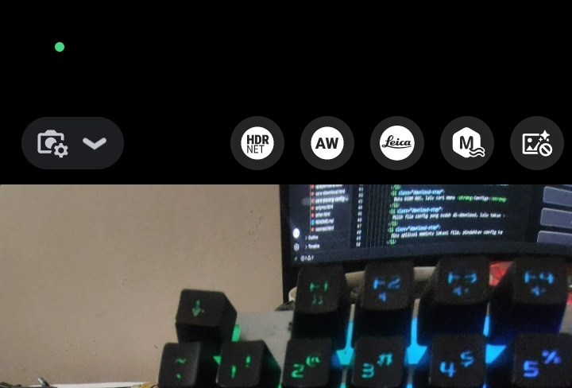
Buka ikon Setelan di pojok kiri atas. 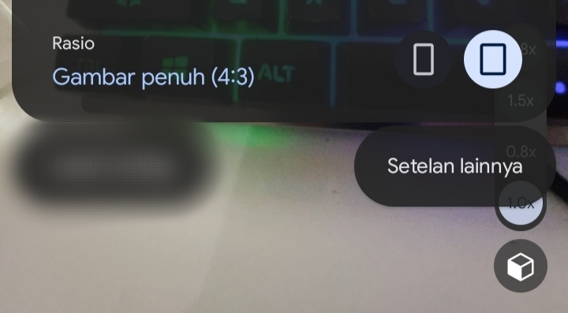
Pilih Setelan lainnya. -
Masuk ke Setelan, lalu cari dan buka Custom file lalu buka icon XML nya.
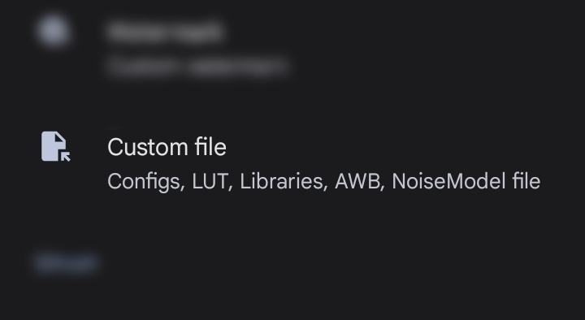
Buka menu Setelan GCAM AGC. 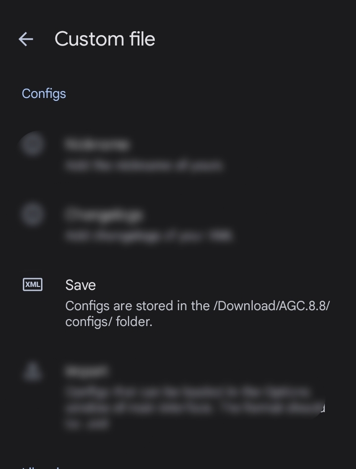
Lanjutkan ke pengaturan Custom file. -
Di bagian Configs, tekan Save untuk menyimpan XML terlebih dahulu. Nama XML bebas, lalu tekan Yes. Langkah ini membuat folder config GCAM AGC.
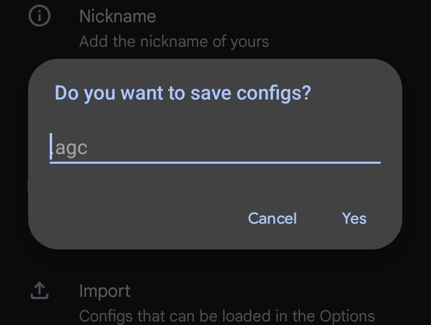
Tekan Save di bagian Configs untuk membuat folder config. 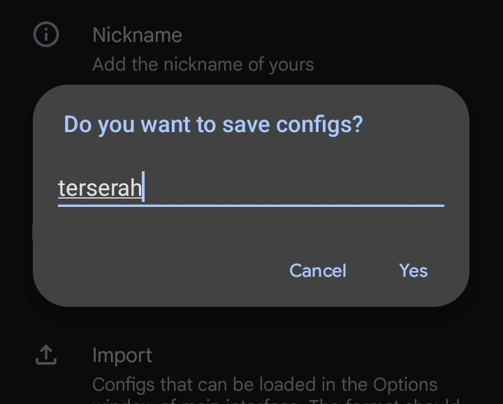
Beri nama XML sesuai keinginan, lalu tekan Yes. -
Buka aplikasi ZArchiver, lalu masuk ke folder Download.
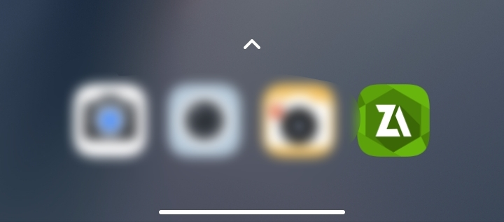
Buka ZArchiver dari daftar aplikasi. 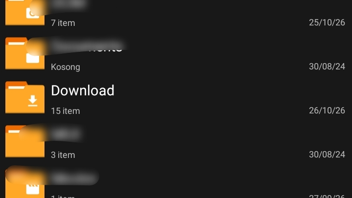
Tampilan tambahan folder Download. -
Cari file apip.agc di folder Download. Tekan dan tahan file tersebut, lalu pilih Salin.
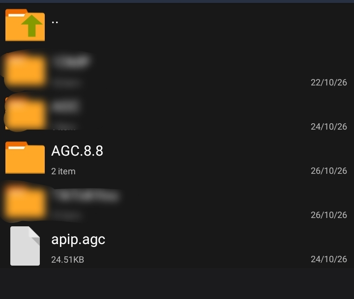
Pastikan file config apip.agc sudah ada di Download. 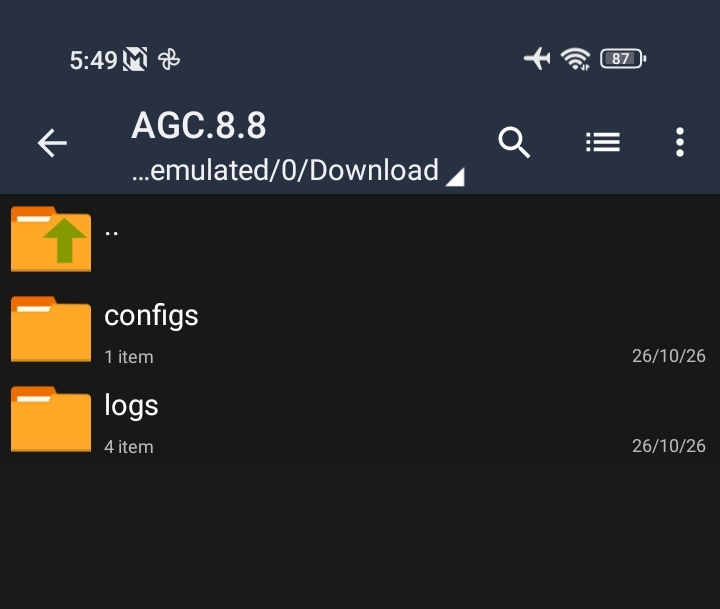
Pastikan folder configs di AGC.8.8 sudah tersedia. -
Masuk ke Download > AGC.8.8 > configs, lalu tempel file apip.agc di folder tersebut.
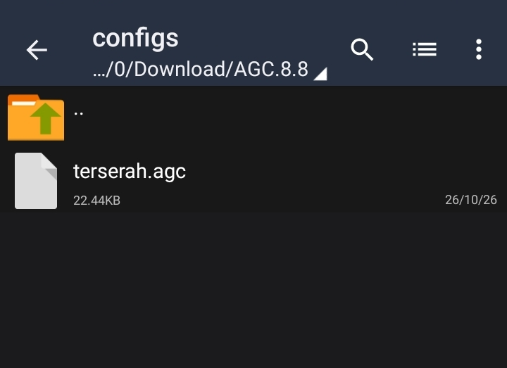
Pilih Salin untuk menyalin file config. 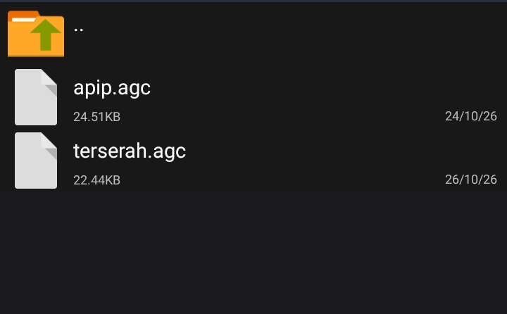
Pastikan file apip.agc sudah tersimpan di folder configs. -
Kembali ke aplikasi GCAM AGC. Buka menu kamera dari ikon di pojok kiri atas, lalu pilih Load Configs.
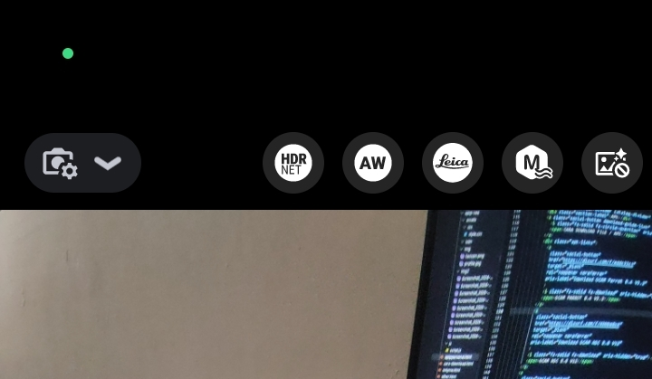
Buka menu kamera untuk memilih Load Configs. 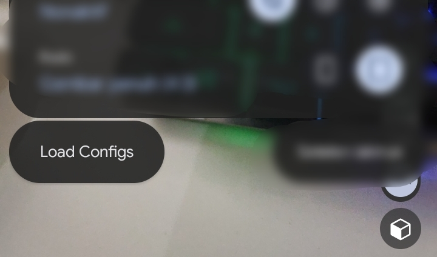
Pilih menu Load Configs pada GCAM AGC. -
Ketuk apip.agc untuk memuat config. Setelah selesai, kamera GCAM AGC siap digunakan.
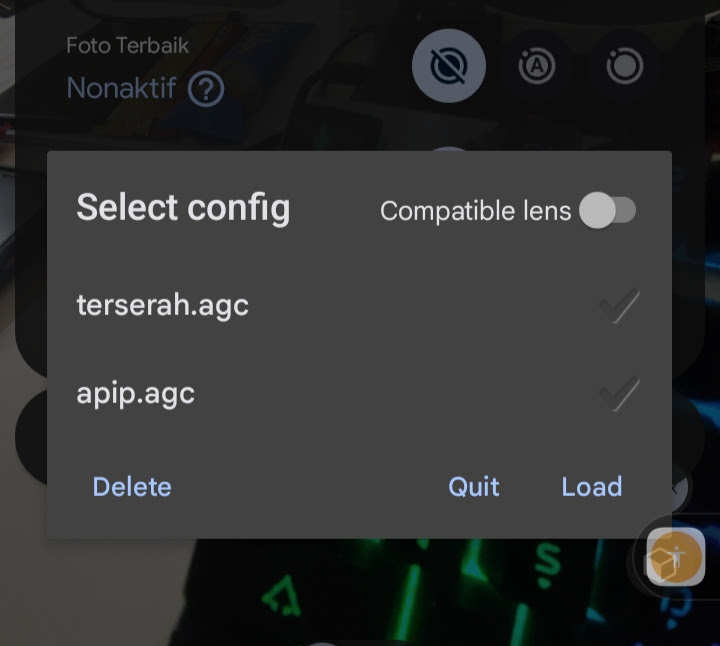
Pilih apip.agc dari daftar config. 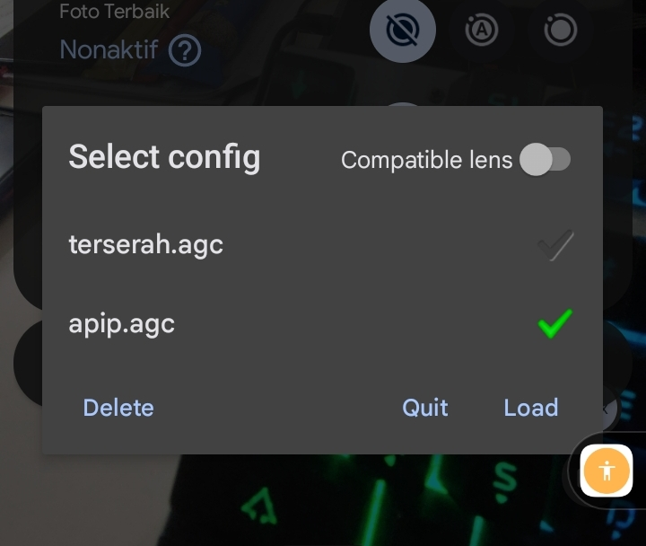
Pastikan apip.agc terpilih, lalu tekan Load.
Jika config tidak muncul, pastikan file apip.agc berada di Download/AGC.8.8/configs dan sesuai dengan versi GCAM AGC yang digunakan.